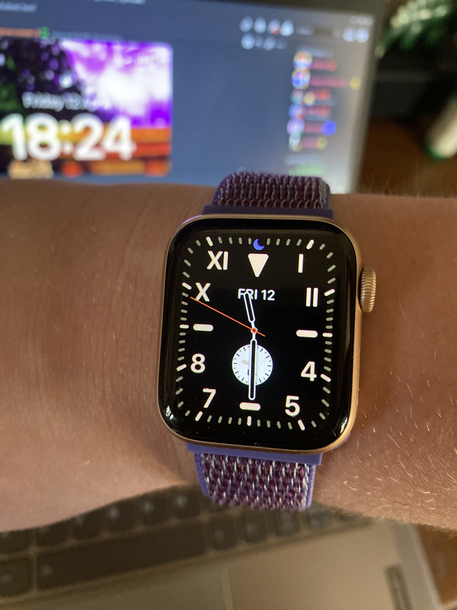

thoughts on pebble, fitbit, and watches generally
i'm happy that pebble's back. they were the best money (a rather small amount) could buy back then. despite their widely publicized and tragic death, you could kinda see traces of them in fitbit's earlier watches and especially in any of their trackers since the charge. but any trace of pebble vanished from fitbit's smart watch line with the versa 4 and sense 2 (which are the worst devices fitbit's ever made mostly because the software sucks shit)
pebble lived on in fitbit's products in two ways; looks, and apps. fitbit's smart watches had a massive selection of user-created apps that were easy to develop and distribute. and fitbit's trackers just looked like pebbles, pixelated interfaces on small devices that lasted a solid week. my record when i daily drove a inspire hr was a full 7 days of daily use.

fitbit's later acquisition by google was the beginning of the end for this lineage. as of writing (jan 2025) not a single fitbit behaves at all like a pebble. the trackers have all moved to full-colour, and the smart watches no longer allow external apps. the last passable fitbit smartwatch came out just a year before the acquisition. the versa 3, which i owned and daily drove before abandoning ship for an apple watch.
i was a late leaver compared to other fitbit diehards, getting my apple watch in febuary of 2024. many of them left a year earlier when fitbit killed challenges, an amazing feature focused on beating your friends or family in a certain metric, usually steps. my family was huge on these, and many of my relatives got fitbits as gifts just to participate, sadly most of them were poorly timed. including my purchase of a versa 3, less than a month before the announcement of the end of challenges.
we attempted to rekindle the challenges with external apps, but it wasn't the same. data didn't sync right, and it was extra steps, which, put bluntly, doesn't work well with older folks.
i've been on an apple watch for just under a year now, and as lovely the software is, the battery leaves a lot to be desired. my fitbits never lasted less than a business week (even with AOD on the versa 3), and now, with the degraded battery in my apple watch i can't get it to even last a business day. even when my battery was at 85% (i bought it used) i wasn't able to get much more than a day and a half.
to get to the point, modern smart watches suck, there is not a single smart watch currently on the market that i am entirely happy with. fitbits have ZERO apps, apple watches don't last, garmins are thick, amazfit exists, and all of the good wearos watches are android-only.
and don't even get me started on the round vs square debate, there is a reason mechanical watches are usually round and it's because it's the right shape for a watch.
(note: those tall rectangles are also acceptable)
i'm excited to see another watch in the same vein (or, if you will, in the same artery as pebble) as the older versas, blaze, surge, and ionic (which was so good that Obama wears one to this day) with the added element of pebble charm. if i can get a (hopefully circular) smart watch a little thinner than the inspire 3, that lasts just as long, i think i could die happy.
or i'll just say forget the whole thing and get a mechanical watch already. üêæ